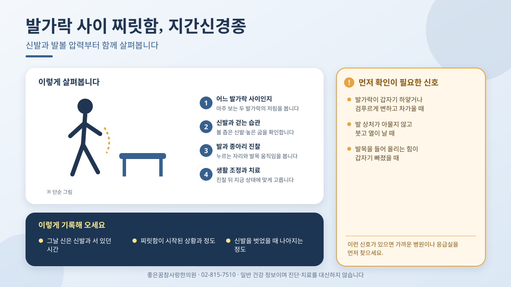

이종호 한의사 감수좋은꿈참사랑한의원 대표원장 (한의사 면허번호 19769)발행 2026-11-26 · 수정 2026-11-27
이 글의 차례
퇴근길 지하철에서 내려 계단을 오르는데 발가락 사이가 찌릿합니다. 신발 속에 작은 돌멩이가 들어간 것 같아 벤치에 앉아 신발을 벗고 털어 보죠. 그런데 아무것도 안 나와요. 다시 신고 걸으면 또 같은 자리가 화끈거립니다. 진료실에서 이런 얘기를 들으면 저는 먼저 어느 발가락 사이인지부터 여쭤요.
이 불편은 생각보다 많은 분이 겪고, 또 생각보다 오래 참으세요. 발가락 사이가 저리다고 하면 주변에서는 혈액순환 문제라거나 신발이 작아서 그렇다고 가볍게 넘기기 쉽거든요. 그러다 보니 신발을 벗고 발을 주무르면 잠시 덜해지는 일을 몇 달씩 되풀이하다 오시는 경우가 많아요.
발가락 사이로 지나가는 가느다란 신경이 눌리고 자극을 받아 두꺼워지면서 생기는 통증을 지간신경종이라고 불러요. 흔히 모턴 신경종이라고도 하고요. 이름에 '종'이라는 글자가 들어가 혹이 생긴 것처럼 들려서 놀라시는 분이 많은데요.
그러니까 사실은 두 개가 다른 얘기예요. 새로 무언가가 자라난 '혹'과, 신경 주변 조직이 반복해서 눌리며 도톰해진 '두꺼워짐'은 달라요. 지간신경종은 뒤쪽이라고 이해하시면 돼요. 좁은 신발 안에서 같은 자리가 매일 눌려 온 흔적에 가깝거든요.
왜 하필 발가락 사이일까요? 발볼이 넓게 퍼져야 할 자리를 앞코 좁은 신발이 양옆에서 조이면, 그 사이를 지나는 신경이 뼈 사이에 끼어 눌리기 쉬워서예요. 그래서 저는 발만이 아니라 신발과 걷는 습관도 같이 봐요.
지간신경종은 어떤 상태인가요
발바닥 앞쪽, 발가락이 시작되는 뿌리 부분을 흔히 발볼이라고 부릅니다. 이 발볼에는 발가락으로 가는 뼈들이 나란히 놓여 있고, 그 뼈와 뼈 사이로 발가락의 감각을 맡는 가느다란 신경이 지나갑니다. 신경은 발가락 바로 앞에서 둘로 갈라져 서로 마주 보는 발가락 두 개의 옆면으로 향합니다.
걸을 때마다 발볼은 몸무게를 받아 내고, 뼈 사이의 좁은 틈은 눌렸다 풀리기를 되풀이합니다. 볼이 좁은 신발이나 굽 높은 신발을 오래 신으면 이 틈이 더 좁아지고 신경이 더 자주, 더 세게 눌립니다. 눌림이 쌓이면 신경 주변이 도톰해지고, 도톰해진 신경은 다시 더 쉽게 눌리는 흐름이 이어집니다.
가장 흔한 자리는 셋째와 넷째 발가락 사이입니다. 둘째와 셋째 발가락 사이에 생기기도 하고, 드물게 양쪽 발에 함께 나타나기도 합니다. 신경이 둘로 갈라지는 자리라서, 통증이나 저림이 발가락 한 개가 아니라 마주 보는 두 발가락에 함께 퍼지는 것이 특징입니다.
이런 느낌이 많습니다
지간신경종을 겪는 분들이 쓰시는 표현은 꽤 비슷합니다. 아래 가운데 여러 가지가 겹친다면 발가락 사이 신경을 한번 살펴볼 만합니다.
- 신발 속에 작은 돌이나 구겨진 양말을 밟는 느낌
- 발가락 사이가 찌릿하거나 전기가 오는 느낌
- 두 발가락이 함께 저리거나 감각이 둔해진 느낌
- 발볼이 화끈거리거나 타는 듯한 느낌
- 신발을 벗고 발을 주무르면 한결 나아지는 것
- 맨발이나 볼 넓은 신발에서는 덜하고, 구두를 신으면 심해지는 것
처음에는 오래 걷거나 특정 신발을 신었을 때만 잠깐 나타나다가, 시간이 지나면 짧게 걸어도 금세 찌릿해지는 경우가 있습니다. 반대로 신발을 바꾸고 생활을 조정하면서 찌릿함이 줄어드는 분도 계십니다. 같은 이름이라도 흐름은 사람마다 다릅니다.
왜 발가락 사이 신경이 눌리게 될까요
발가락 사이 신경이 눌리는 데에는 몇 가지 이유가 겹치는 경우가 많습니다. 하나만 바꿔도 덜해지는 분이 있는가 하면, 여러 가지를 함께 살펴야 하는 분도 있습니다.
첫째는 신발입니다. 앞코가 뾰족하거나 볼이 좁은 신발은 발가락을 옆에서 모아 조이고, 그 사이의 신경도 함께 조여집니다. 굽이 높으면 몸무게가 발볼로 쏠려 앞쪽에 실리는 압력이 커집니다. 둘 다 오래 이어지면 신경이 쉴 틈이 줄어듭니다.
둘째는 발의 모양과 걷는 습관입니다. 발 아치가 낮아 발이 안쪽으로 많이 무너지는 분, 반대로 아치가 높아 발볼에 힘이 몰리는 분, 엄지발가락이 휘어 다른 발가락이 밀려 있는 분은 발볼의 특정 자리에 압력이 집중되기 쉽습니다.
셋째는 반복되는 발볼 충격입니다. 달리기나 줄넘기처럼 발 앞쪽으로 착지하는 운동, 오래 서서 일하며 발끝에 체중을 싣는 일, 쪼그려 앉아 발가락을 꺾는 자세가 잦으면 같은 자리가 계속 자극을 받습니다.
넷째는 발을 둘러싼 근육과 종아리의 긴장입니다. 종아리가 뻣뻣하면 걸을 때 발목이 덜 접히고, 그만큼 발볼로 빨리 체중이 넘어갑니다. 그래서 진료실에서는 발만이 아니라 종아리와 발목이 어떻게 움직이는지도 함께 봅니다.
비슷한 발 통증과는 어떻게 다를까요
발 앞쪽의 통증은 원인이 여러 가지라서, 지간신경종만 떠올리기보다 비슷한 상태와 나란히 놓고 보는 것이 좋습니다.
발볼 전체가 넓게 아프고 발가락 뿌리 관절을 누를 때 아프다면 발볼 통증, 흔히 중족골통이라 부르는 상태를 먼저 생각합니다. 지간신경종은 관절 바로 위보다 뼈와 뼈 사이를 눌렀을 때 아프고, 저림이나 찌릿함 같은 신경의 느낌이 함께 오는 경우가 많습니다.
발바닥의 특정 자리에 단단한 굳은살이나 티눈이 있고 그 자리를 밟을 때 콕콕 찌르듯 아프다면 피부 쪽 문제를 먼저 살핍니다. 굳은살은 눈으로 보이고 만져지지만, 지간신경종은 겉으로 보기에 대개 아무 변화가 없습니다.
발등이 붓거나 발등 쪽 뼈를 누를 때 아프고 걸을수록 심해진다면 피로골절처럼 뼈 쪽 문제를 확인해야 할 수 있습니다. 엄지발가락 뿌리가 갑자기 붉게 붓고 화끈거린다면 통풍을 함께 생각합니다. 이런 경우에는 영상 검사나 혈액 검사가 먼저 필요할 수 있습니다.
발가락 끝까지 양쪽 발이 고르게 저리고, 양말을 신은 듯 감각이 둔한 느낌이 발 전체로 퍼진다면 발가락 사이 한 곳의 문제라기보다 몸 전체의 신경을 살펴야 할 수 있습니다. 당뇨가 있으신 분이라면 이 부분을 내과 선생님과 함께 확인하시길 권합니다.
집에서 해 볼 수 있는 간단한 확인
혼자서 대략의 흐름을 가늠해 볼 수 있는 방법이 있습니다. 다만 이 확인은 진단이 아니라 진료실에서 이야기를 나눌 때 도움이 되는 정보라고 생각해 주세요.
- 엄지로 셋째와 넷째 발가락 사이 뿌리 부분을 지그시 눌러 봅니다. 평소 느끼던 찌릿함이 그대로 나오는지 봅니다.
- 한 손으로 발볼을 양옆에서 감싸 살짝 모아 쥐어 봅니다. 이때 발가락 사이가 찌릿하다면 기록해 둡니다.
- 볼이 넓은 운동화와 평소 구두를 번갈아 신고 같은 거리를 걸어 보며 차이를 적어 둡니다.
- 마주 보는 두 발가락의 옆면 감각을 다른 발과 비교해 봅니다.
누를 때 아픈 자리가 정확히 어디인지, 신발에 따라 차이가 뚜렷한지, 두 발가락 감각이 다른지는 진료실에서 가장 먼저 여쭙는 내용이기도 합니다.
확인하면서 통증이 크게 올라오면 더 세게 누르지 말고 멈춰 주세요. 아픈 자리를 자꾸 눌러 확인하는 것만으로도 신경이 더 예민해질 수 있습니다. 한두 번 확인하고 기록해 두는 것으로 충분합니다. 양쪽 발을 같은 방법으로 비교해 보시면 차이가 더 또렷하게 느껴집니다.
먼저 이렇게 여쭙니다
처음 오시면 대략 이런 순서로 여쭙니다. 미리 떠올려 오시면 진찰 시간이 훨씬 알차집니다.
- 어느 발, 어느 발가락 사이가 불편한가요?
- 언제부터였고, 어떤 신발을 신었을 때 가장 심한가요?
- 신발을 벗고 주무르면 나아지나요?
- 오래 서 있거나 걷는 일, 달리기 같은 운동을 하시나요?
- 발이나 발목을 다친 적이 있나요?
- 당뇨나 갑상선 질환처럼 신경에 영향을 줄 수 있는 질환이 있나요?
- 드시는 약이나 영양제가 있나요?
이미 정형외과에서 진료를 받으셨거나 영상 검사를 하셨다면 결과지와 설명 들으신 내용을 함께 가져와 주세요. 같은 내용을 두 번 검사하지 않아도 되고, 지금까지의 흐름을 이어서 살피기에 좋습니다.
일상에서 먼저 해 볼 수 있는 것
지간신경종은 생활에서 바꿀 수 있는 부분이 꽤 많은 편입니다. 특히 신발은 오늘부터 바로 시작할 수 있는 일입니다.
- 앞코가 넓고 발가락이 자유롭게 움직이는 신발 고르기
- 굽은 낮게, 바닥은 너무 얇지 않고 적당히 쿠션이 있는 것으로
- 신발 끈이나 벨크로로 발등을 적당히 잡아 발이 앞으로 쏠리지 않게 하기
- 오래 서 있는 날은 중간중간 신발을 벗고 발가락을 펴 주기
- 발볼로 착지하는 달리기나 줄넘기는 통증이 가라앉을 때까지 잠시 줄이기
- 맨발로 딱딱한 바닥을 오래 걷지 않기
구두를 꼭 신어야 하는 날이 있다면 출퇴근길에는 편한 운동화를 신고, 사무실에서만 구두로 갈아 신는 방법도 있습니다. 하루 중 신경이 눌리는 시간을 줄이는 것만으로도 저녁에 느끼는 찌릿함이 달라지는 경우가 많습니다.
발가락 사이를 넓혀 주는 간단한 움직임도 도움이 될 수 있습니다. 앉은 자리에서 발가락을 활짝 폈다가 오므리기를 천천히 열 번쯤 되풀이해 보세요. 수건을 바닥에 깔고 발가락으로 끌어당기는 동작도 발의 작은 근육을 깨우는 데 좋습니다. 하다가 찌릿함이 커지면 바로 멈추시면 됩니다.
종아리를 풀어 주는 것도 잊지 마세요. 벽을 짚고 한 발을 뒤로 빼 뒤꿈치를 바닥에 붙인 채 종아리가 당기는 느낌을 20초쯤 유지합니다. 종아리가 부드러워지면 걸을 때 발목이 더 잘 접히고, 발볼로 쏠리는 힘이 조금 줄어듭니다.
깔창을 고민하시는 분도 많습니다. 발볼 바로 뒤쪽을 살짝 받쳐 주는 형태의 깔창이 발가락 사이 틈을 넓히는 데 도움이 되는 분도 있습니다. 다만 발 모양에 따라 맞는 형태가 달라서, 무턱대고 사기보다 진찰 뒤 발 모양을 함께 보고 정하시길 권합니다.
한의원에서 함께 살필 수 있는 경우
- 신발을 바꿨는데도 발가락 사이 찌릿함이 이어지는 경우
- 발볼 통증과 함께 종아리와 발목이 늘 뻣뻣한 경우
- 오래 서서 일하며 저녁마다 발이 화끈거리고 무거운 경우
- 통증 때문에 걷는 자세가 바뀌어 무릎이나 허리까지 불편해진 경우
- 발이 차고 저린 느낌이 함께 있어 잠들기 어려운 경우
좋은꿈참사랑한의원에 오시면 모든 분의 맥을 먼저 짚고, 아래 '먼저 확인이 필요한' 신호가 없는지도 함께 봅니다. 그다음 발을 직접 만져 아픈 자리를 찾은 뒤 발목과 종아리, 무릎과 골반이 걸을 때 어떻게 움직이는지 함께 살핍니다.
진찰한 내용을 바탕으로 신발과 생활에서 바꿔 볼 것을 먼저 정하고, 침 치료나 체외충격파, 초음파를 보며 위치를 확인하는 약침 가운데 지금 상태에 맞는 것을 고릅니다. 모든 분께 같은 치료를 하지 않고, 진찰 소견에 따라 필요한 것만 권해 드립니다.
걷는 자세가 틀어져 무릎이나 허리까지 불편하다면 추나로 골반과 다리의 움직임을 함께 살피기도 합니다. 한약을 상의하는 경우에는 드시는 약을 모두 확인한 뒤 신중하게 정합니다.
통증이 오래 이어지거나 감각이 계속 둔해진다면 정형외과 진료를 함께 받으시도록 안내합니다. 주사나 수술 같은 치료가 필요한지는 정형외과에서 판단하는 부분이고, 한의원 진료는 그 과정과 나란히 걷는 길이라고 생각해 주시면 됩니다.
이렇게 기록해 오시면 상담이 쉬워집니다
발 통증은 신발과 걸음 수, 서 있는 시간에 따라 날마다 다르게 느껴집니다. 일주일 정도만 간단히 적어 보세요.
- 그날 신은 신발 종류
- 대략의 걸음 수나 서 있던 시간
- 찌릿함이 시작된 시각과 상황
- 신발을 벗었을 때 나아지는 정도
- 저림이나 감각이 둔한 발가락의 위치
- 통증 정도를 0부터 10까지 숫자로
기록을 나란히 놓고 보면 어떤 신발, 어떤 하루에 불편이 커지는지가 눈에 들어옵니다. 그 연결이 보이면 바꿔야 할 것이 분명해지고, 진료도 그만큼 정확해집니다.
발을 편하게 두는 시간을 늘려 주세요
발을 편하게 두는 시간을 늘려 주세요
발은 하루 종일 몸을 받치면서도 가장 덜 돌봄을 받는 곳이에요. 발가락 사이가 찌릿하다는 건 그 좁은 틈이 오래 눌려 왔다는 신호일 수 있어요. 그동안 참고 걸어 오신 것만으로도 발이 많이 애썼습니다.
발을 살피는 건 제가 맡을게요. 대신 하나만 부탁드려요. 오늘 저녁에 신발장을 열어 앞코가 가장 좁은 신발과 가장 편한 신발을 나란히 놓아 보시고, 이번 주에는 편한 쪽을 신는 날을 하루만 늘려 주세요. 딴 건 하시던 대로 편하게 하셔도 돼요.
좋아하시는 구두를 버리시라는 얘기가 아니에요. 신고 싶은 날은 신으시되, 오래 걷는 날만 편한 쪽으로 바꾸면 되는 거거든요. 다음에 오실 때 그 차이를 함께 얘기해 봐요. 궁금한 건 그때 편하게 물어보세요.
이런 증상은 먼저 확인이 필요합니다
- 발가락이 갑자기 하얗거나 검푸르게 변하고 차가우며 심하게 아픈 경우
- 발에 난 상처가 아물지 않고 붓고 열이 나거나, 발목을 들어 올리는 힘이 갑자기 빠진 경우
이런 신호가 있으면 한의원보다 가까운 병원이나 응급실을 먼저 찾으세요.
함께 읽으면 좋은 글
- 발바닥 통증은 어떤 종류가 있고 어떻게 구분해서 살피나요?
- 발바닥 굳은살과 티눈이 걸을 때마다 콕콕 찌르듯 아플 때는 어떻게 살피나요?
- 엄지발가락이 휘고 튀어나온 곳이 아픈 무지외반 통증은 어떻게 살피나요?
- 안쪽 복사뼈 아래가 저리고 발바닥이 화끈거리는 발목 터널 증후군(족근관 증후군)은 어떻게 살피나요?
- 평발이거나 발 아치가 무너져 발바닥 안쪽이 아플 때는 무엇을 살피고 어떻게 관리하나요?

여쭙는 것
- 어느 발, 어느 발가락 사이가 불편한가요?
- 언제부터였고, 어떤 신발을 신었을 때 가장 심한가요?
- 신발을 벗고 주무르면 나아지나요?
생활에서 해 볼 것
- 앞코가 넓고 발가락이 자유롭게 움직이는 신발 고르기
- 굽은 낮게, 바닥은 너무 얇지 않고 적당히 쿠션이 있는 것으로
- 신발 끈이나 벨크로로 발등을 적당히 잡아 발이 앞으로 쏠리지 않게 하기
한의원에서 함께 살필 것
- 신발을 바꿨는데도 발가락 사이 찌릿함이 이어지는 경우
- 발볼 통증과 함께 종아리와 발목이 늘 뻣뻣한 경우
- 오래 서서 일하며 저녁마다 발이 화끈거리고 무거운 경우
먼저 확인이 필요한 신호
- 발가락이 갑자기 하얗거나 검푸르게 변하고 차가우며 심하게 아픈 경우
- 발에 난 상처가 아물지 않고 붓고 열이 나거나, 발목을 들어 올리는 힘이 갑자기 빠…
한눈에 보는 표
| 구분 | 핵심 |
|---|---|
| 여쭙는 것 | 어느 발, 어느 발가락 사이가 불편한가요? 언제부터였고, 어떤 신발을 신었을 때 가장 심한가요? |
| 생활에서 해 볼 것 | 앞코가 넓고 발가락이 자유롭게 움직이는 신발 고르기 굽은 낮게, 바닥은 너무 얇지 않고 적당히 쿠션이 있는 것으로 |
| 한의원에서 함께 살필 것 | 신발을 바꿨는데도 발가락 사이 찌릿함이 이어지는 경우 발볼 통증과 함께 종아리와 발목이 늘 뻣뻣한 경우 |
| 먼저 확인이 필요한 신호 | 발가락이 갑자기 하얗거나 검푸르게 변하고 차가우며 심하게 아픈 경우 발에 난 상처가 아물지 않고 붓고 열이 나거나, 발목을 들어 올리는 힘이 갑자기 빠진 경우 |
자주 묻는 질문
지간신경종이면 혹을 떼어 내야 하나요?
이름 때문에 혹을 떠올리시지만 신경 주변이 반복해서 눌려 도톰해진 상태입니다. 신발과 생활을 바꾸며 지켜보는 경우가 많고, 수술 같은 치료가 필요한지는 정형외과에서 판단합니다.
신발만 바꿔도 덜해질 수 있나요?
볼이 넓고 굽이 낮은 신발로 바꾸고 나서 찌릿함이 줄어드는 분이 꽤 많습니다. 다만 발 모양과 걷는 습관이 함께 얽혀 있다면 종아리와 발목의 움직임도 같이 살펴보는 것이 좋습니다.
발가락 사이가 저린데 혈액순환 문제는 아닌가요?
마주 보는 두 발가락에만 저림이 있고 특정 신발에서 심해진다면 신경이 눌리는 쪽을 먼저 생각합니다. 발 전체가 고르게 저리거나 색이 변한다면 다른 원인을 함께 확인합니다.
운동은 계속해도 되나요?
발볼로 착지하는 달리기나 줄넘기는 통증이 가라앉을 때까지 줄이고, 걷기나 실내 자전거처럼 발볼 충격이 적은 운동으로 바꿔 보시길 권합니다. 하다가 찌릿함이 커지면 쉬어 주세요.
초음파 검사는 모든 분께 하나요?
아닙니다. 진찰해 보고 필요하다고 판단되면 초음파로 발가락 사이 조직을 살펴봅니다. 이미 받으신 검사 결과가 있다면 가져와 주세요.
좋은꿈참사랑한의원은 재진 때 지난번 이야기부터 이어서 여쭙니다. 진료시간과 예약은 오시는 길에서 확인하세요.
어디서 상담받을 수 있나요?
좋은꿈참사랑한의원은 서울 동작구 만양로2길 2 신성빌딩 3층·5층(서울 동작구 상도동, 7호선 상도역 3번 출구 근처)에 있습니다. 한의사 3명(이종호 대표원장, 조영기 수석진료원장, 정원영 진료원장)이 진료합니다. 진료시간은 평일 09:30~20:00(점심 13:00~14:00), 토·일·공휴일 09:30~15:00이며, 방문 전 전화로 확인을 권합니다. 예약은 네이버 예약, 카카오톡 상담, 전화 02-815-7510로 받습니다.
이 글은 일반적인 건강 정보이며 개인의 진단이나 치료를 대신하지 않습니다. 증상이 있거나 복용 중인 약이 있다면 진료를 통해 확인하세요. 치료 효과는 개인마다 다를 수 있습니다.
작성 기준: 일반적으로 알려져 있는 건강 정보를 참고해 정리했습니다(대표원장 감수). 증상 기록은 1~2주 동안 하루 1회, 비슷한 시간에 적어 오시면 지난 상태와 비교하기 쉽습니다.